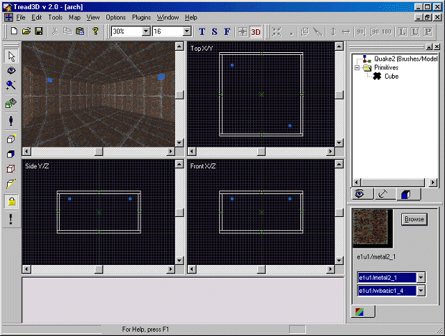
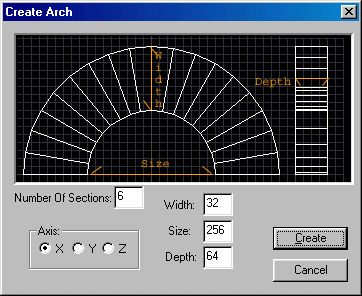
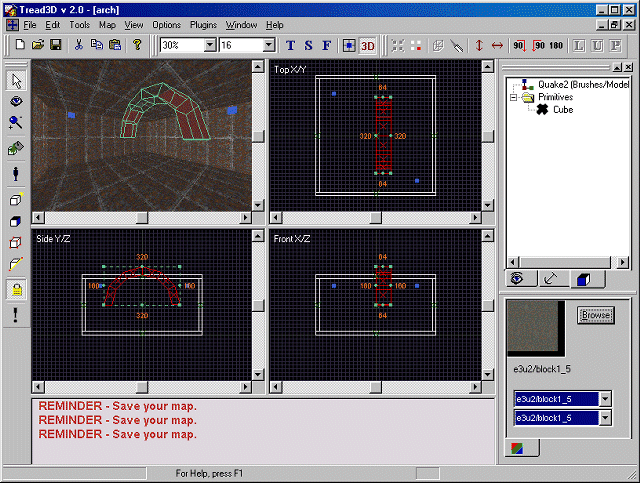

This is a walk-through as to how to use the Shapes Plugin for Arches.
Before starting this tutorial you should first get acquainted with the basics of the "Tread3D" editor; the screen and the various commands that are available.
As in the previous tutorials start "Tread3D".
Lets make a very basic room that is 512x512x256 units.
Also load a different texture in the Texture Window than the ones used to build the room.
Your screen should look like the one below.

Now click on the "Plugins" menu and scroll down to "Shapes".

You will see three choices and these are:
Make Arch (This will automatically create a arch)
Make Cone (This will automatically create a cone)
Make Cylinder (This will automatically create a cylinder)
Lets point to the "Make Arch" option.
A new window should now appear.
The "Create Arch" window should look like the one below.

Now some important notes:
The "Number Of Sections" input determines the number of "Slivers" that will make up the arch.
The "Axis" input determines what axis the center line of the arch will be on.
The "Width" input determines the radial thickness of the arch.
The "Size" input determines what the opening under of the arch will be.
The "Depth" input determines the thickness of the arch.
Let's use the default settings.
Just click "Create".
Your screen should look like the one below.

Now lower the arch so that it touches the floor of your room.
Your screen should look like the one below.

Now some important notes:
The "Arch" imported into your map has the original characteristics that you inputted.
As long as the "Arch" is still grouped you can manipulate it as you would a single "Brush".
The larger the "Number Of Sections" the smoother the arch curve will appear.
Thats all there is to it.
What you have done is "Imported a arch using the shapes plugin".
Now resave your work.